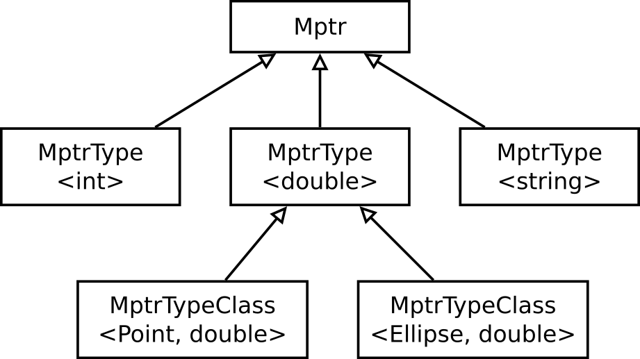

Ha szeretnénk az előadás példáját, amelyben a pontnak osztálynak
double és string adattagja is van, reprodukálni C++-ban, egy problémába ütközünk. Az adattag pointerek
egymással nem kompatibilis típusok. Tekintsük az alábbi osztályt:
struct Point {
double x, y;
std::string label;
};Ennek x és y adattagjára double Point::*, label adattagjára
pedig std::string Point::* típusú pointer tud mutatni. Ennek a két pointertípusnak azonban nincs közös
őse, így nem tehetünk egy tárolóba, pl. tömbbe, vegyesen double Point::*-okat és std::string Point::*-okat:
nem lehet
struct PointMemberData {
char const* name;
?????? mptr; // ide nem tudunk mit írni
} point_members[] = {
{ "x", &Point::x },
{ "label", &Point::label }, // ez a kettő nem kompatibilis
};Közös őse csak osztályoknak lehet, beépített típusoknak nem. Csomagoljuk be osztályokba ezeket a mutatókat! Az ezeket tartalmazó osztály sablon lesz, ahol a sablonparaméter a hivatkozott adattag típusa. A sablon osztályok pedig leszármaznak egy közös ősből (type erasure):
struct Point;
struct PointMemberBase {
char const* name;
PointMemberBase(char const* name) : name(name) {}
virtual ~PointMemberBase() = default;
};
template <typename T>
struct PointMember : public PointMemberBase {
T Point::* mptr_;
PointMember(char const* name, T Point::* mptr)
: PointMemberBase(name), mptr_(mptr) {}
};Figyeljük meg: a közös ős nem csinál semmit, csak azért van, hogy legyen. Ez teszi majd lehetővé, hogy a különféle
PointMember objektumokból (PointMember<double>, PointMember<std::string>)
heterogén kollekciót építsünk. Így:
struct Point {
double x, y;
std::string label;
};
PointMemberBase* point_members[] = {
new PointMember<double>("x", &Point::x), // konverzió!
new PointMember<double>("y", &Point::y),
new PointMember<std::string>("label", &Point::label),
nullptr,
};Abban a pillanatban, hogy egy PointMember<T> objektum pointerét az
ősosztálya pointerévé alakítunk, információt dobunk el: nem látjuk a becsomagolt mptr adattagokat
a PointMemberBase típusú pointeren keresztül. Ezért mielőtt használni szeretnénk valamelyik
objektumba csomagolt mptr-t, vissza kell alakítani a pointert a saját, eredeti
típusára. Oldjuk meg most ezt virtuális függvény helyett egy dynamic_cast-tal! A dynamic_cast
futási időben ellenőrzi a pointerátalakítás helyességét, és nullptr-t ad akkor, ha nem megfelelő
a cél típus. Ezt ki is tudjuk használni:
int main() {
Point p1 = { 2.3, 4.5, "hello" };
for (size_t i = 0; point_members[i] != nullptr; ++i) {
auto memberbase = point_members[i];
std::cout << memberbase->name << " = ";
if (auto member = dynamic_cast<PointMember<double>*>(memberbase)) {
std::cout << p1.*(member->mptr_) << " (double)";
}
else if (auto member = dynamic_cast<PointMember<std::string>*>(memberbase)) {
std::cout << p1.*(member->mptr_) << " (std::string)";
}
else {
throw std::logic_error("Unknown data type in object");
}
std::cout << std::endl;
}
}x = 2.3 (double) y = 4.5 (double) label = hello (std::string)
A lényeg a dynamic_cast-os sorokban történik. Ha a cast sikeres, nem nullptr-t ad vissza, akkor azt jelenti,
hogy pont olyan típusú adattagról van szó – ebben az esetben pedig kiolvassuk azt, kiírjuk, és melléírjuk a típusát is. (Ne
felejtsük el, hogy a két << operátor is különbözik, az egyik a double-ös, a másik az
std::string-es, csak ez formailag nem látszik rajtuk!) A dynamic_cast miatt az ősosztályban szükségünk van egy virtuális destruktorra. A dynamic_cast csak polimorf osztályokon
működik. Azokon, amelyekneknek van virtuális függvénytáblájuk, mert van legalább egy virtuális függvényük.
Az eddig leírt programrészeknek van egy komoly hiányossága: a leíró struktúrában, a hivatkozó adattag pointerekben mindenhol
szerepel a Point osztály neve. Az egészet erre a konkrét osztályra hegyeztük ki. Egy nagyobb programban ennél
komolyabb célunk lehet: olyan függvények írása, amelyek fájlba írják, fájlból beolvassák egy objektum adatait, esetleg
dialógusablakot hoznak létre az objektum tulajdonságai módosításának lehetővé tételére. Mindezt az objektum típusának ismerete
nélkül.
Elégedjünk meg most azzal, hogy az objektumban lévő adattagok típusait, mint az előbb, felsoroljuk. Tehát azt mondjuk, hogy a reflektív objektumaink, rendelkezhetnek pl. valós szám, szín, sztring, logikai érték típusú adattaggal, és mással nem.
A megoldás trükkje az, hogy nem a reflektív objektum tagfüggvénye keresi meg a saját attribútumát, hanem az adattag pointert tároló segédosztály tagfüggvénye végzi el ezt a munkát, és azt kell meghívni. A következőképpen képzelhetjük el a működést:
- Kapunk egy ismeretlen típusú objektumot. Csak annyit látunk, hogy az objektum leszármazik a
Reflectiveosztályból (azaz megvalósítja aReflectiveinterfészt). Ezen kívül semmit nem tudunk róla. - Legyen a
Reflectiveosztálynak egyget_memberdata()függvénye, amelyet ha meghívunk, ad egy tömböt, amely leírja az adott osztály adattagjait. Valahogy így: „Van egyxnevű adattagom, ez egy valós. Van egyynevű adattagom, szintén valós szám. Alabeladattagom egy sztring.” - Ezek után végigiterálunk a kapott tömbön. Egy esetszétválasztásban felsoroljuk a lehetséges típusokat;
valamiféle
get()függvény pedig megadja a szóban forgó objektum szóban forgó adattagjának referenciáját, amelyet írni/olvasni tudunk.
Használjuk fel az előző pontban kitalált trükköt: csomagoljuk az adattag pointereket osztályokba, amelyeket a számunka szükséges hierarchiába szervezünk! A fenti működést az adattag pointereket tartalmazó, alábbi osztályhierarchia teszi majd lehetővé:
Ebben a legfelső Mptr osztály feladata, hogy közös ősként szolgáljon az összes MptrType<T>
osztályok számára. A következő szinten, az MptrType<T> osztályokban azt már ismerjük, hogy milyen típusú
adattagról van szó (int, double, ...), de azt még nem, hogy milyen osztály adattagjáról. Így ezen a
szinten sem tárolódnak még adattag pointerek (azok mindig az osztályhoz és az adattag típusához is kötöttek). Viszont ezen a
szinten már minden osztálynak van egy T& get(Reflective &obj) tisztán virtuális függvénye, amelyet majd a
leszármazottak valósítanak meg. A T& get(Reflective &obj) függvény jelentése: egy ismeretlen típusú
(Reflective) objektumnak kérjük el a már ismert típusú (T) adattagját.
A legalsó szinten vannak azok az osztályok, amelyeknek már sablonparamétere a hivatkozott objektum típusa és az adattag
típusa is. Így ezek el tudják tárolni az adattag pointereket, és a T& get(Reflective &obj) függvényeket
megvalósítva a hívójuknak vissza is tudják adni egy objektum valamely adattagját. A get() függvények megvalósítása
egyetlen sorból áll:
template <typename CLASS_NAME, typename MEMBER_TYPE>
class MptrTypeClass : public MptrType<MEMBER_TYPE> {
MEMBER_TYPE CLASS_NAME::* mptr;
virtual MEMBER_TYPE& get(Reflective& obj) const {
return dynamic_cast<CLASS_NAME&>(obj).*mptr;
}
};Mit csinál a return utasításban megadott kifejezés? Megkapta egy objektum referenciáját. Az objektum
számára ismeretlen típusú, csak annyit tud róla, hogy valamilyen reflektív objektum. Van hozzá egy
adattag pointer (mptr), aminek a típusa elvileg a kapott objektumhoz kell passzoljon. Ezért ezt a referenciát
átalakítja CLASS_NAME& típusú referenciává, és utána már a .* operátorral eléri az
mptr pointer által hivatkozott adattagot. Ez éppen a keresett adattag, ezért vissza is tér vele.
Vegyük észre, hogy a dynamic_cast()-ba épített futási idejű ellenőrzés miatt nem tudunk hibázni: ha
az obj objektum típusa és az mptr típusa nem stimmel, a dynamic_cast() kivételt
fog dobni.
Az ismeretlen típusú objektum adatait kiíró függvény, amely megvalósítja a fenti lépéseket, így néz ki:
void print_data_in_obj(Reflective& obj) { // 1
Mptr** memberdata = obj.get_memberdata(); // 2
for (size_t i = 0; memberdata[i] != nullptr; ++i) {
if (auto member = dynamic_cast<MptrType<double>*>(memberdata[i])) { // 3
std::cout << memberdata[i]->name << " = "
<< member->get(obj) << " double " << std::endl;
}
else if (auto member = dynamic_cast<MptrType<std::string>*>(memberdata[i])) {
std::cout << memberdata[i]->name << " = '"
<< member->get(obj) << "' std::string " << std::endl;
}
else {
throw std::logic_error("Unknown data type");
}
}
}Furcsának tűnhet, hogy obj.get(member) helyett member->get(obj)
alakú a hívás. De így nem a Reflective osztály leszármazottaiban kell implementálni ezeket a függvényeket;
a leszármazottaknak semmi dolgunk nincs az adattagokat leíró táblázat megadásán kívül. Az OOP-ben sokszor segít, ha
A és B objektum kommunikációját megpróbáljuk A.fv(B) és B.fv(A) módon is megvalósítani.
„Don't call us, we'll call you”.
gen_reflective.cpp.
Figyeljük meg a kódot: itt sehol nem történt hivatkozás az objektum konkrét típusúra.